Crea tu REA para el Proyecto REA Andalucía
3.3. Guía de calidad: lo que no puede faltar en tu REA
Objetivo
Esta guía sirve para conocer cómo elaborar recursos educativos abiertos para el Proyecto REA Andalucía siguiendo pautas de calidad.
Esta guía es un material para facilitar la aplicación de la Norma UNE 71362:2018.
Nos hemos basado para su elaboración en principios basados en la evidencia científica sobre cómo aprendemos a partir de la obra ¿Cómo aprendemos? Una aproximación científica al aprendizaje y la enseñanza (2020) por Héctor Ruiz Martín.
Puedes usar esta guía...
1. Como ayuda para la creación de un nuevo REA.
2. Como herramienta para la autoevaluación de un REA ya elaborado.
3. Como soporte para la selección de un REA.
Aquí encuentras
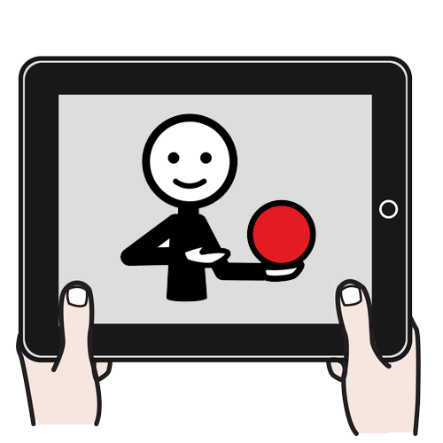Pautas para verificar la calidad del diseño didáctico
 1. ¿Has tomado decisiones sobre qué enseñar?
1. ¿Has tomado decisiones sobre qué enseñar?
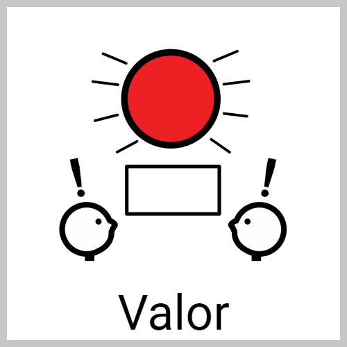2. ¿Es útil para el alumnado?
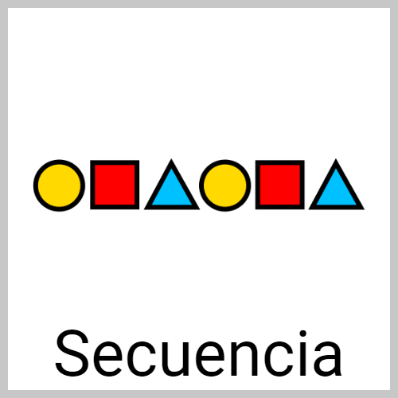3. ¿Presenta una secuencia coherente?
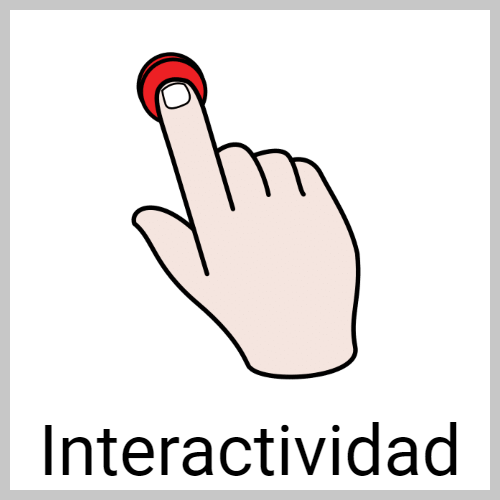4. ¿Está diseñado para que tu alumnado aprenda?
 5. ¿Contiene lo necesario para enseñar/aprender?
5. ¿Contiene lo necesario para enseñar/aprender?
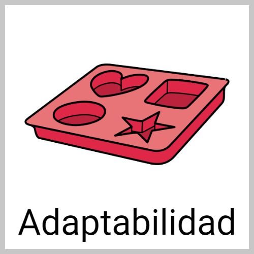6. ¿Sirve para atender a la diversidad de perfiles?
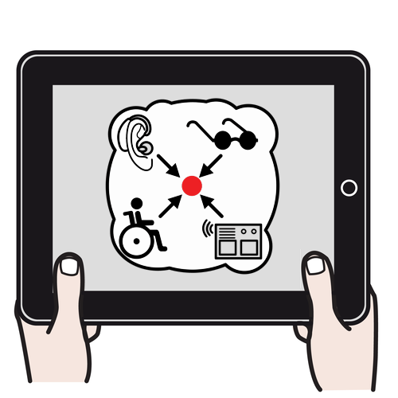Pautas para verificar la calidad del diseño técnico
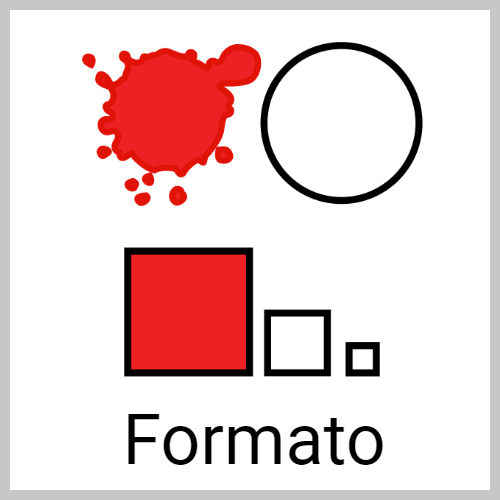1. ¿Su diseño facilita la comprensión?
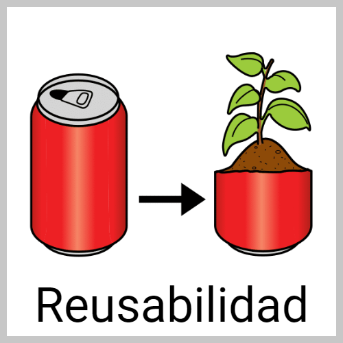2. ¿Se puede usar múltiples veces?
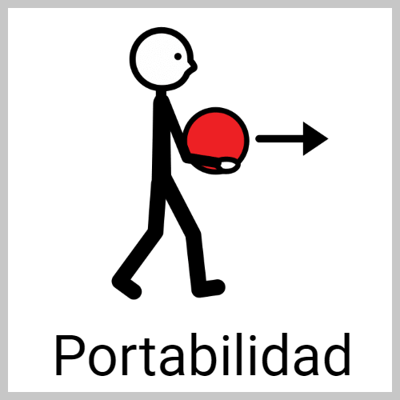3. ¿Se puede usar en diferentes entornos?
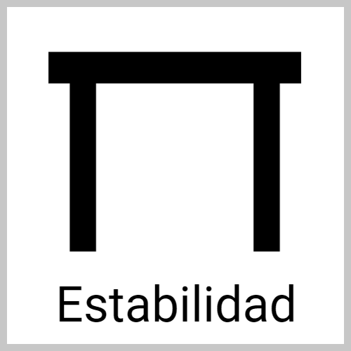4. ¿No tiene fallos técnicos?
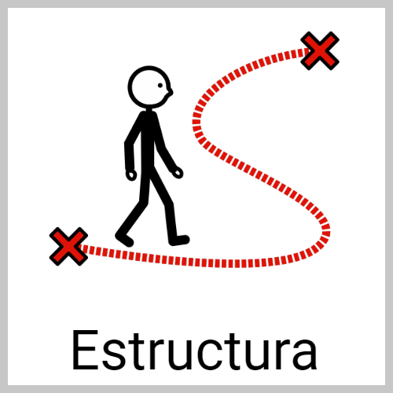5. ¿El escenario de aprendizaje tiene una estructura?
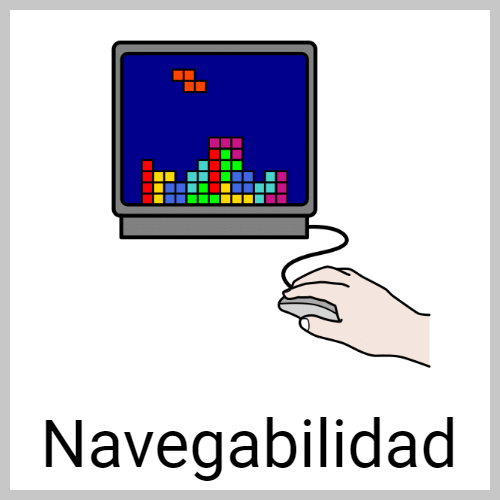6. ¿Se puede navegar por él de forma clara?
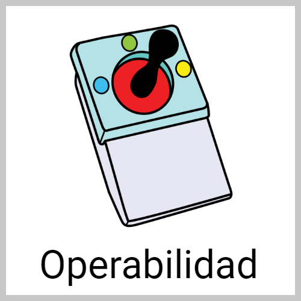7. ¿Puede manejarse con diferentes dispositivos?
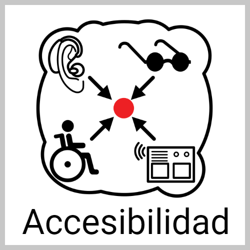8. ¿El contenido textual y audiovisual es accesible?
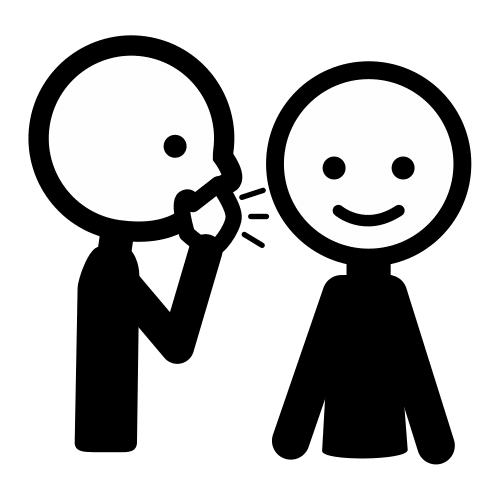Una lista de verificación para que autoevalúes la calidad de tu REA
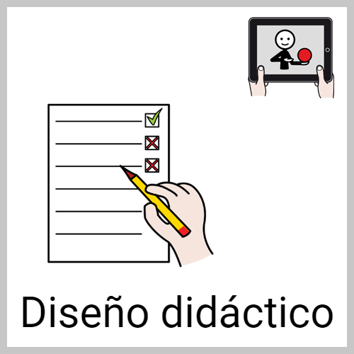1. Lista de verificación para comprobar la calidad del diseño didáctico.
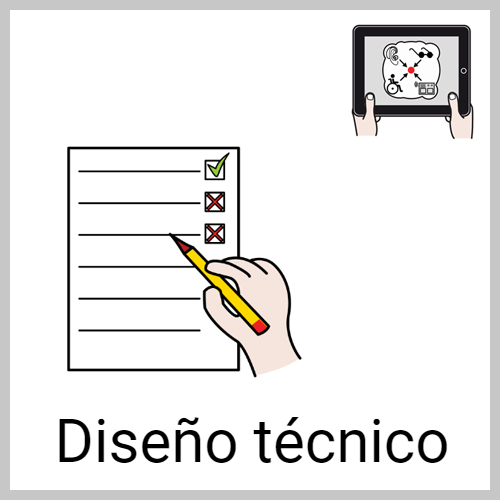2. Lista de verificación para comprobar la calidad del diseño técnico.
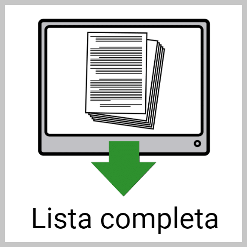3. Lista de verificación de calidad completa en formato PDF.
Obra publicada con Licencia Creative Commons Reconocimiento No comercial Compartir igual 4.0